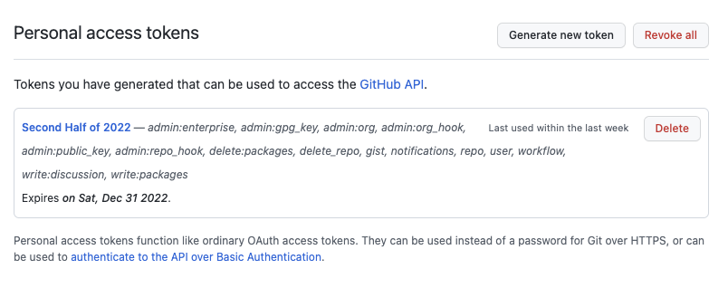
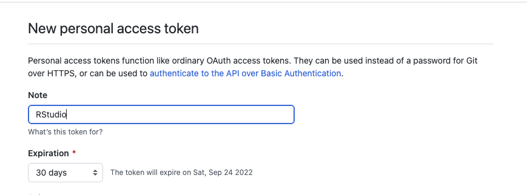
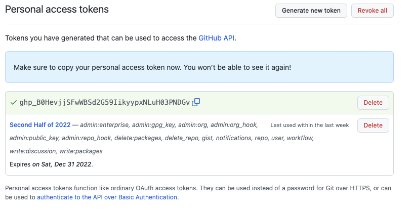

install.packages("usethis")
install.packages("credentials")
library(usethis)Generating A Personal Access Token
To create a new token in RStudio, you will be using some packages that you may not have on your machine already. No problem. Just follow the instructions below.
Open RStudio and select the R Console.
Type in the following command
Now create a token from Github by typing in the following command
create_github_token()This will open a verification window in a browser that will ask you to verify your GitHub credentials. Then it will dump you into the Personal Access Token settings page for your GitHub account.

Generate a new token and give it a name for its intended use.

It will produce this long access token (the
ghp_B0…part. Copy that long access token, this is your key (n.b., this one is not valid after I made this page).
No go back into RStudio and type
credentials::set_github_pat("YOUR ACCESS TOKEN HERE")
You should be able to check to see if your access token is set and all good by looking at the output from this command. You should s
git_sitrep()Somewhere in the output you should see something like:
• Personal access token for 'https://github.com': '<discovered>'
If so, you are good!